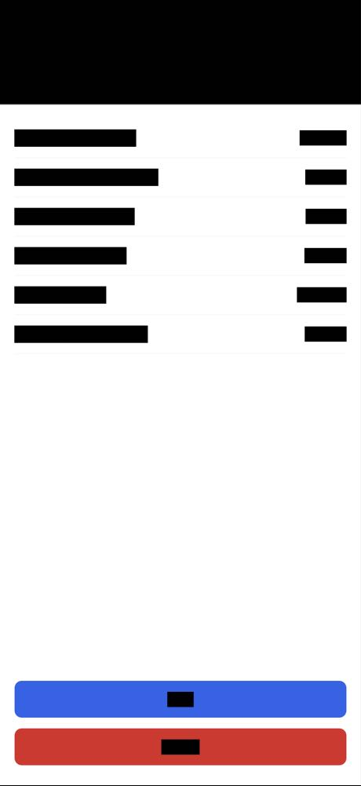
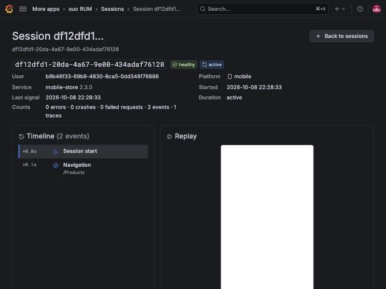

2026-10-08, Xcode 27.0 on macOS 27.0.1, iPhone 18 Pro simulator with iOS 27.0, Expo 57 dev client built from examples/mobile with the OuoReplay native module linked through CocoaPods.
| Check | Result | Evidence |
|---|---|---|
| App launches on iOS 27 and reaches the Products screen | pass | Required adopting the UIScene life cycle (new config plugin examples/mobile/plugins/withUIScene.js); figure 1 |
| Native module registered and started by the JS SDK | pass | Metro log: replay: started {endpoint: http://localhost:8080, frameInterval: 1, maskText: true, ...}, after fixing module lookup to use globalThis.expo.modules |
Frame chunk reaches rum-api with kind: frames | pass | GET /v1/sessions/df12dfd1-…/replay: chunk_count 1, frame_count 2, viewport 402×874, platform ios |
| Text is redacted on device before upload | pass | Figure 2: every product name, price and button label is a black rectangle in the captured JPEG |
| Session appears in Grafana with status, version and trace | pass | Figure 3: healthy, mobile, mobile-store 2.3.0, 1 trace with Explore link |
| Frame player plays and scrubs in Grafana | pass | Figure 4: playback advanced to frame 2/2 showing the masked screen; markers and scrubber rendered |
| Session lifecycle on relaunch | pass | Metro log: previous session ended with reason terminated, new session carries session.previous_id |
Checkout input masking and ouo-unmask on the product title | not yet verified on device | Needs taps; the simulator panel requires sudo xcode-select -s /Applications/Xcode.app/Contents/Developer on this Mac |
| Navigation bar fully redacted (over-masking) | fixed, re-verification pending | Empty UIImageViews (bar backgrounds) are now reported as plain views; rebuilt after this report was written |


SceneDelegate subclassing ExpoAppSceneDelegate, and the AppDelegate changes.OuoReplay.OuoReplay, which fails under CocoaPods.expo-modules-core, which Metro cannot resolve from a symlinked package; it now reads globalThis.expo.modules first and reports the reason when the module is missing.export DEVELOPER_DIR=/Applications/Xcode.app/Contents/Developer LANG=en_US.UTF-8 cd examples/mobile && npx expo prebuild --platform ios && (cd ios && pod install) cd ios && xcodebuild -workspace mobilestore.xcworkspace -scheme mobilestore -destination 'generic/platform=iOS Simulator' CODE_SIGNING_ALLOWED=NO build xcrun simctl boot "iPhone 18 Pro" && xcrun simctl install booted <build>/mobilestore.app npx expo start --dev-client --port 8081 # in examples/mobile xcrun simctl launch booted dev.ouo.mobilestore curl localhost:8080/v1/sessions?from=now-10m&platform=mobile